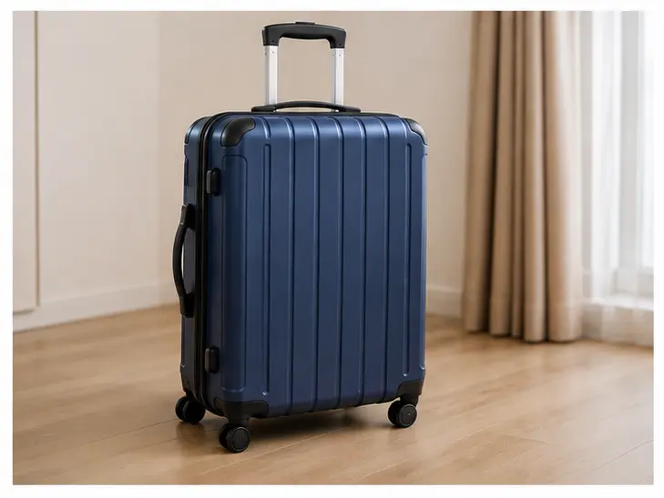

第1–3题：听对话，选择最匹配的图片。每题听两次。 — Nghe hội thoại, chọn hình phù hợp nhất. Mỗi câu nghe 2 lần.
A
B
C

D
例如 Ví dụ：
男：喂，请问张经理在吗？
女：他正在开会，您半个小时以后再打，好吗？ → D
第二部分 Part II
第4–6题：听对话，选择正确答案。每题听两次。
例如：
女：我需要搬一些椅子到楼上办公室，你能来帮忙吗？
男：没问题，我再叫几个人来帮你。
问：他们要把椅子搬到哪儿？ A 教室 B 办公室 ✓ C 体育馆
第三部分 Part III
第7–10题：听一段话，选择正确答案。每题听两次。
例如：
那个年轻人刚来公司不久，很有工作热情，人也很聪明。
问：关于那个年轻人，可以知道什么？ A 很聪明 ✓ B 是留学生 C 爱踢足球
📖
Đọc hiểu 二、阅读 Reading
Chọn đáp án rồi bấm “Chấm điểm” ở thanh dưới cùng để tự kiểm tra.
第一部分 Part I
第11–15题：匹配句子。
A 我们身高都是一米七，但是她比我瘦。
B 别着急，我去服务台问问，会找到的。
C 左边第二个。他跟我长得不像。
D 那是我妹妹，我带她来的。
E 当然。我们先坐公交车，然后换地铁。
F 不客气，我可以看一下您的护照吗？
例如：你知道怎么去国家图书馆吗？ → E
第二部分 Part II
第16–20题：选词填空。
A 像 B 以为 C 重要 D 帮助 E 鞋 F 应该
例如：中间那双（ E ）是谁的？
第三部分 Part III
第21–24题：选择正确答案。
0 / 14 câu
✍️
Viết 三、书写 Writing
第一部分 Part I
第25–27题：根据拼音写汉字。 — Viết chữ Hán đúng theo pinyin cho sẵn, rồi bấm "Chấm điểm".
例如：咱们一会儿（ dǎ 打 ）车回家吧。
0 / 3 câu
第二部分 Part II
第28–30题：看图，用词造句。 — Nhìn mô tả tranh, đặt câu với từ cho sẵn. Phần này có nhiều cách viết đúng nên không tự chấm điểm, bấm "Xem câu ví dụ" để đối chiếu.
例如：(cậu bé đang nhảy lên, vẻ mặt vui sướng) 开心 → 他开心得跳起来了。